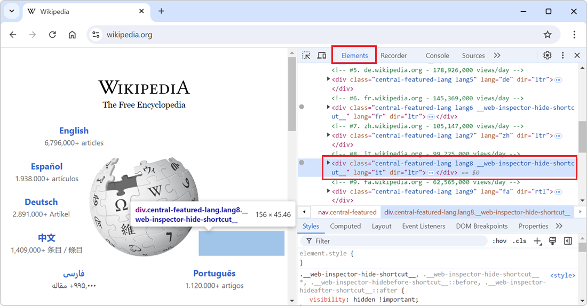
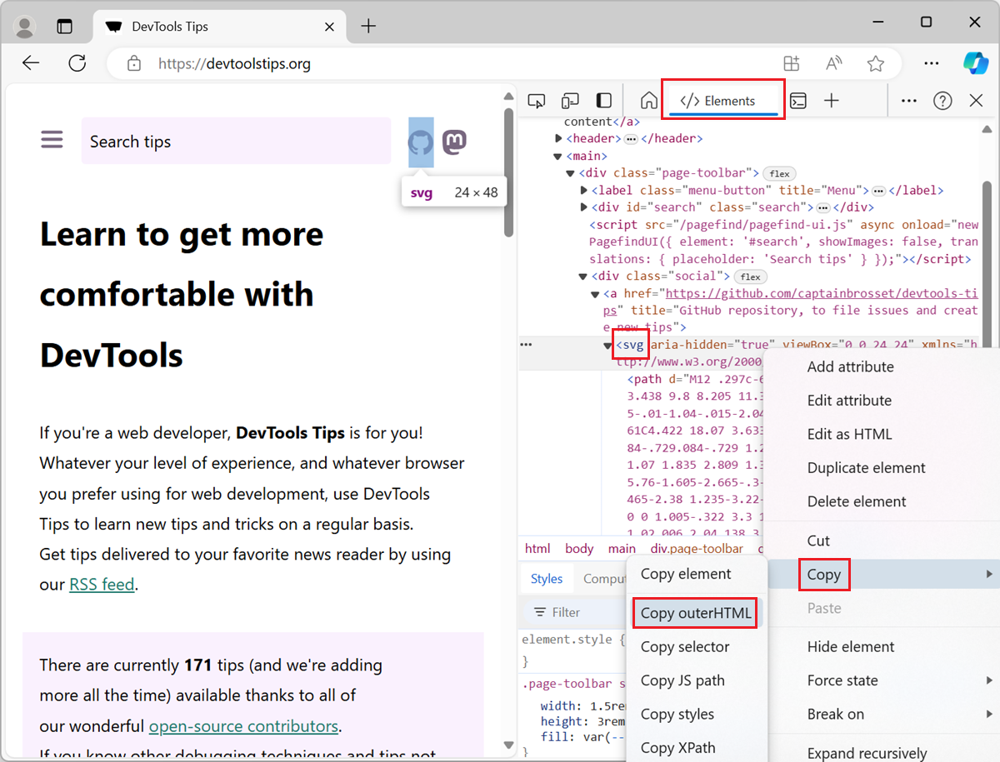

61 Polypane tips
-
Hide elements from the page, without changing the layout

In the DevTools' Elements (or Inspector) tool, you can delete nodes from the DOM tree by selecting them in the tool and then pressing Delete or Backspace. While this is great to completely remove the... Read more
-
Pick a color from the webpage, or the screen
 When working with the CSS of a webpage, from the Elements or Inspector tool, in DevTools, there may be times when you want to reuse a existing color from the webpage, or from the screen, but might not... Read more
When working with the CSS of a webpage, from the Elements or Inspector tool, in DevTools, there may be times when you want to reuse a existing color from the webpage, or from the screen, but might not... Read more -
Display the specificity of a CSS selector
 The specificity of a CSS selector is a score that the browser computes based on the different parts of the selector. It is used to determine which CSS rule takes precedence when multiple rules from th... Read more
The specificity of a CSS selector is a score that the browser computes based on the different parts of the selector. It is used to determine which CSS rule takes precedence when multiple rules from th... Read more -
Copy an inline SVG image's source code

To copy the SVG source code of an SVG image that's embedded directly in the HTML of a webpage, use the Elements tool in DevTools (Inspector in Firefox). To open DevTools, right-click the SVG image i... Read more
-
Disable all CSS styles on the page
 To remove all CSS styles on a webpage, for example to test the accessibility of a page when styles are disabled, or to verify the order in which content is displayed, you can use the techniques below.... Read more
To remove all CSS styles on a webpage, for example to test the accessibility of a page when styles are disabled, or to verify the order in which content is displayed, you can use the techniques below.... Read more -
Debug popups that appear on hover
 As described in Debug popups that appear on hover using JS and in Debug popups that appear on hover using the debugger statement, there are ways to debug popups that appear on hover using JavaScript.... Read more
As described in Debug popups that appear on hover using JS and in Debug popups that appear on hover using the debugger statement, there are ways to debug popups that appear on hover using JavaScript.... Read more -
See the viewport size
 The size of the viewport that's used to render a webpage in a browser can be very important at times, such as when creating or debugging media queries. You can easily know what the current size of the... Read more
The size of the viewport that's used to render a webpage in a browser can be very important at times, such as when creating or debugging media queries. You can easily know what the current size of the... Read more -
Convert images to data-urls
 A data URL is a URL that starts with the prefix data: instead of http: or https:. This data prefix (or scheme) allows you to embed the actual content of the resource in the URL itself, rather than lin... Read more
A data URL is a URL that starts with the prefix data: instead of http: or https:. This data prefix (or scheme) allows you to embed the actual content of the resource in the URL itself, rather than lin... Read more -
Find the offset parent of an element
 To know what an element is offset against horizontally or vertically (Which you do with position:relative and a left, top or inset value) you need to know its offset parent. The offset parent of an el... Read moreCategories: Supported by:
To know what an element is offset against horizontally or vertically (Which you do with position:relative and a left, top or inset value) you need to know its offset parent. The offset parent of an el... Read moreCategories: Supported by: -
Highlight all elements on the page that match a given CSS selector
 When you select an element in DevTools (in the Elements or Inspector tool), you see the CSS rules that apply to it. But, these rules can also apply to other elements in the page than the currently sel... Read more
When you select an element in DevTools (in the Elements or Inspector tool), you see the CSS rules that apply to it. But, these rules can also apply to other elements in the page than the currently sel... Read more -
Find all elements with a specific style
 Let's say you want to list all of the elements on a page that are absolutely positioned. Or maybe you want to find all of the elements that use CSS grid. How would you do that? One way is to run a few... Read more
Let's say you want to list all of the elements on a page that are absolutely positioned. Or maybe you want to find all of the elements that use CSS grid. How would you do that? One way is to run a few... Read more -
Customize the columns shown in console.table
 The console.table method is great for displaying tabular data in the console, but what if the objects your're logging contain a lot of properties, causing a lot of columns to appear in the console? Fo... Read more
The console.table method is great for displaying tabular data in the console, but what if the objects your're logging contain a lot of properties, causing a lot of columns to appear in the console? Fo... Read more -
Speed up or slow down a video
 You can speed up or slow down a video on a website by using the playbackRate property of the video element. This can be very useful for when the website makes it tricky to do this in the UI! Open Dev... Read more
You can speed up or slow down a video on a website by using the playbackRate property of the video element. This can be very useful for when the website makes it tricky to do this in the UI! Open Dev... Read more -
Debug your print CSS styles by simulating print media
 If you work on a webpage that's supposed to be printed, you probably want to test your print CSS styles. You can use your browser's print preview of course, but what if you need to debug the CSS? DevT... Read more
If you work on a webpage that's supposed to be printed, you probably want to test your print CSS styles. You can use your browser's print preview of course, but what if you need to debug the CSS? DevT... Read more -
Find broken links
 The link to X on page Y doesn't work is probably a bug report you've received at some point. But how do you find these broken links before someone else does? In Polypane, the Outline Panel will show y... Read moreCategories: Supported by:
The link to X on page Y doesn't work is probably a bug report you've received at some point. But how do you find these broken links before someone else does? In Polypane, the Outline Panel will show y... Read moreCategories: Supported by: -
List the fonts used on a page, or an element
 "What font is that?" or "Why is this font used?" are probably questions you've asked yourself while working on a website design. However, it's not always easy to know which fonts a... Read more
"What font is that?" or "Why is this font used?" are probably questions you've asked yourself while working on a website design. However, it's not always easy to know which fonts a... Read more -
Emulate color schemes
 In CSS, you can use the prefers-color-scheme media feature (docs) to detect if the user prefers using a light or a dark theme in their operating system. This is useful to style your website in a way t... Read more
In CSS, you can use the prefers-color-scheme media feature (docs) to detect if the user prefers using a light or a dark theme in their operating system. This is useful to style your website in a way t... Read more -
Simulate multiple devices that are kept in sync
 Instead of simulating devices one by one and switching between them, Polypane supports testing on multiple simulated devices and viewports at the same time. It lets you test different simulated device... Read moreCategories: Supported by:
Instead of simulating devices one by one and switching between them, Polypane supports testing on multiple simulated devices and viewports at the same time. It lets you test different simulated device... Read moreCategories: Supported by: -
Show web vitals
 Web vitals are a set of metrics that help you determine how well-built your page is. You can learn more about them here. These scores can be obtained with various online checks like PageSpeed Insights... Read moreCategories: Supported by:
Web vitals are a set of metrics that help you determine how well-built your page is. You can learn more about them here. These scores can be obtained with various online checks like PageSpeed Insights... Read moreCategories: Supported by: -
Autofill forms for testing
 In Polypane you can right-click any form on the page and select Autofill form to add dummy values to all input elements. This prevents you from having to go field-by-field to fill in all required fiel... Read moreCategories: Supported by:
In Polypane you can right-click any form on the page and select Autofill form to add dummy values to all input elements. This prevents you from having to go field-by-field to fill in all required fiel... Read moreCategories: Supported by: -
Reload a page when there's changes on disk
 While working on a page locally and you're not using a hot reloading dev server, you need to reload the browser yourself to see the change. You need to do this every time you save a file. Wouldn't it... Read moreCategories: Supported by:
While working on a page locally and you're not using a hot reloading dev server, you need to reload the browser yourself to see the change. You need to do this every time you save a file. Wouldn't it... Read moreCategories: Supported by: -
See formatted JSON responses
 Edge (starting with 110), Firefox and Polypane all have a very nice JSON viewer tool that makes it easy to view JSON responses from your server directly in the browser window. You don't even need to o... Read more
Edge (starting with 110), Firefox and Polypane all have a very nice JSON viewer tool that makes it easy to view JSON responses from your server directly in the browser window. You don't even need to o... Read more -
Debug unwanted scrollbars
 Sometimes scrollbars appear on a web page in places we don't want them to. And when this happens, it's not always very straightforward to fix the problem. Which container is responsible for the scroll... Read more
Sometimes scrollbars appear on a web page in places we don't want them to. And when this happens, it's not always very straightforward to fix the problem. Which container is responsible for the scroll... Read more -
Simulate different devices and screen sizes
 All browser DevTools have a built-in mode that you can use to test a webpage under different screen sizes and device capabilities. As a web developer, it is very important to realize that your website... Read more
All browser DevTools have a built-in mode that you can use to test a webpage under different screen sizes and device capabilities. As a web developer, it is very important to realize that your website... Read more -
Install or create extensions to customize DevTools
 There's a lot of tools in DevTools already, probably more than you use. But in some cases, you may need very specific tools that aren't available by default. Thankfully, DevTools can be extended with... Read more
There's a lot of tools in DevTools already, probably more than you use. But in some cases, you may need very specific tools that aren't available by default. Thankfully, DevTools can be extended with... Read more -
Access results from recent Console evaluations
 Imagine you evaluate a long expression like $$('*').map(el => Object.values(el.attributes).map(attr => {return {name: attr.name, value: attr.value}})) which extracts the attributes from all of t... Read more
Imagine you evaluate a long expression like $$('*').map(el => Object.values(el.attributes).map(attr => {return {name: attr.name, value: attr.value}})) which extracts the attributes from all of t... Read more -
Get the recently selected DOM nodes in the console
 If you type $0 in the Console tool, in any browser, the currently selected DOM node is returned. This is very handy. To learn more, check Get the selected element in the console. On top of this, in Ed... Read more
If you type $0 in the Console tool, in any browser, the currently selected DOM node is returned. This is very handy. To learn more, check Get the selected element in the console. On top of this, in Ed... Read more -
Copy CSS selector of an element
 To uniquely identify an element that lacks an identifier, so that you can reference the element in JavaScript and other places, use DevTools' ability to copy unique CSS selectors. All DevTools have th... Read more
To uniquely identify an element that lacks an identifier, so that you can reference the element in JavaScript and other places, use DevTools' ability to copy unique CSS selectors. All DevTools have th... Read more -
Jump from a label `for` attribute to the linked input (and more)
 In HTML, it's possible for certain attributes to reference other elements by their IDs. For example, a <label>'s for attribute can be used to link the label to the input it's associated with: &l... Read more
In HTML, it's possible for certain attributes to reference other elements by their IDs. For example, a <label>'s for attribute can be used to link the label to the input it's associated with: &l... Read more -
Empty the cache and hard refresh
 Here is a nice tip to quickly empty your cache and refresh the page, in order to test new code changes: In Chrome, or Edge, open DevTools (F12). This step is not needed for Polypane. Right-click on t... Read more
Here is a nice tip to quickly empty your cache and refresh the page, in order to test new code changes: In Chrome, or Edge, open DevTools (F12). This step is not needed for Polypane. Right-click on t... Read more -
Create your own simulated devices
 You can simulate various different devices from DevTools, to get an idea of how your webpage might render on those devices (note that this is only a simulation, the tool only changes the screen dimens... Read more
You can simulate various different devices from DevTools, to get an idea of how your webpage might render on those devices (note that this is only a simulation, the tool only changes the screen dimens... Read more -
Discover all the tools
 DevTools is confusing! There's so much functionality packed in such a small UI. Did you know that Chrome DevTools had more than 30 individual tools! Yes, that's right, 30. It's hard for both new users... Read more
DevTools is confusing! There's so much functionality packed in such a small UI. Did you know that Chrome DevTools had more than 30 individual tools! Yes, that's right, 30. It's hard for both new users... Read more -
Copy an elements styles
 You can extract all the styles of an element in one go by using the Copy styles feature. No need to go through all CSS rules and properties that apply to the element in the Styles pane, and manually b... Read more
You can extract all the styles of an element in one go by using the Copy styles feature. No need to go through all CSS rules and properties that apply to the element in the Styles pane, and manually b... Read more -
Use document.designMode to spell check your webpage
 Amelia Bellamy-Royds shared a really cool tip to spell-check a webpage's content from DevTools: Open DevTools, and go to the Console tool. Type document.designMode = "on" and press Enter. C... Read more
Amelia Bellamy-Royds shared a really cool tip to spell-check a webpage's content from DevTools: Open DevTools, and go to the Console tool. Type document.designMode = "on" and press Enter. C... Read more -
Visualize and debug CSS cascade layers
 Cascade layers is a CSS feature that allows web developers to define their CSS styles in multiple layers and control the order in which these layers apply. Cascade layers are meant to bring an elegant... Read more
Cascade layers is a CSS feature that allows web developers to define their CSS styles in multiple layers and control the order in which these layers apply. Cascade layers are meant to bring an elegant... Read more -
Fix low color contrast issues
 With DevTools you can detect low color contrast issues which is great. But Chrome DevTools, Edge DevTools, and Polypane, you can go one step further and fix these issues directly! In Chrome and Edge #... Read more
With DevTools you can detect low color contrast issues which is great. But Chrome DevTools, Edge DevTools, and Polypane, you can go one step further and fix these issues directly! In Chrome and Edge #... Read more -
console.log() is great, but do you know console.table()? console.group()? console.assert()?
 You probably know about console.log() already, it's a great way to print variables and objects to the console while the code is running, to debug it. But there are other console methods that can help... Read more
You probably know about console.log() already, it's a great way to print variables and objects to the console while the code is running, to debug it. But there are other console methods that can help... Read more -
Emulate forced-color mode
 Operating systems offer an accessibility feature where the colors shown on the screen are converted to offer higher contrast. When you use this feature, it impacts all the content on the screen: your... Read more
Operating systems offer an accessibility feature where the colors shown on the screen are converted to offer higher contrast. When you use this feature, it impacts all the content on the screen: your... Read more -
Send feedback, ask for features and report bugs
 Browser vendors depend on your feedback to build the right tools for you. Without hearing from you all about what problems you have, or what features you lack, they can't take the right decisions abo... Read more
Browser vendors depend on your feedback to build the right tools for you. Without hearing from you all about what problems you have, or what features you lack, they can't take the right decisions abo... Read more -
Detect low color contrast issues
 Low color vision is very common, and your choice of text and background colors can negatively impact people's experience of your website. What seems legible to you might not be for everyone. DevTools... Read more
Low color vision is very common, and your choice of text and background colors can negatively impact people's experience of your website. What seems legible to you might not be for everyone. DevTools... Read more -
Use full browser window for device emulation
 Emulating different devices in the browser is incredibly useful. It gets tricky when you are on a device with limited resolution as the emulated device needs to be zoomed down to fit the screen as a l... Read more
Emulating different devices in the browser is incredibly useful. It gets tricky when you are on a device with limited resolution as the emulated device needs to be zoomed down to fit the screen as a l... Read more -
Find HTML parsing errors
 DevTools is so full of features these days that we hardly ever use View-Source anymore. But it turns out that it has one trick up its sleeves that other tools don't, at least in Firefox and Polypane.... Read more
DevTools is so full of features these days that we hardly ever use View-Source anymore. But it turns out that it has one trick up its sleeves that other tools don't, at least in Firefox and Polypane.... Read more -
Select elements with pointer-events:none by holding Shift
 When selecting elements from the page they normally get highlighted on hover and selected on click. However certain elements can't be selected. Indeed, if an element does not react to pointer events b... Read more
When selecting elements from the page they normally get highlighted on hover and selected on click. However certain elements can't be selected. Indeed, if an element does not react to pointer events b... Read more -
Write code on multiple lines in the Console
 If you're feeling adventurous and want to write longer pieces of code in the Console to execute more complex things, it can quickly become difficult. Thankfully, there are a few ways to make your life... Read more
If you're feeling adventurous and want to write longer pieces of code in the Console to execute more complex things, it can quickly become difficult. Thankfully, there are a few ways to make your life... Read more -
Take a screenshot of a single node
 In Firefox, Chrome, Polypane and Edge DevTools, you can screenshot a single node from the page. Go to the Elements panel (or Inspector panel in Firefox). Right-click on the node you want to screensho... Read more
In Firefox, Chrome, Polypane and Edge DevTools, you can screenshot a single node from the page. Go to the Elements panel (or Inspector panel in Firefox). Right-click on the node you want to screensho... Read more -
Automatically logging name and value in console.log()
 Using the console of DevTools you can to log some information to debug your JavaScript. The common way to do that is to add a console.log() statement where you want to learn the value of a certain var... Read more
Using the console of DevTools you can to log some information to debug your JavaScript. The common way to do that is to add a console.log() statement where you want to learn the value of a certain var... Read more -
Simulate pseudo CSS classes
 If you use :hover, :active, or other pseudo-classes in your CSS code, it can be tedious to test them. For example, having to hover over an element which is styled with the :hover pseudo-class means th... Read more
If you use :hover, :active, or other pseudo-classes in your CSS code, it can be tedious to test them. For example, having to hover over an element which is styled with the :hover pseudo-class means th... Read more -
Easily change CSS number values from the keyboard in increments of 0.1, 1, 10, 100
 When playing with styling or layout code in DevTools, it's useful to be able to change widths, margins, and other CSS number values quickly. Manually entering new numbers works of course, but it gets... Read more
When playing with styling or layout code in DevTools, it's useful to be able to change widths, margins, and other CSS number values quickly. Manually entering new numbers works of course, but it gets... Read more -
Prototype content changes with designMode
 When creating or modifying a design prototype for the web, you may want to quickly edit content in the browser without having to find the relevant code. When you turn on designMode for the document or... Read more
When creating or modifying a design prototype for the web, you may want to quickly edit content in the browser without having to find the relevant code. When you turn on designMode for the document or... Read more -
Throttle the network speed to test your website on slower connections
 While you may develop your website on a fast network connection at home or at work, your users may not be able to use it with an equally fast connection. Perhaps they're in a moving car, or on the sub... Read more
While you may develop your website on a fast network connection at home or at work, your users may not be able to use it with an equally fast connection. Perhaps they're in a moving car, or on the sub... Read more -
Find DevTools reference documentation
 If you want to learn more about what other tools exist in a browser, or what features a given tool provides, you can find reference documentation from all the major browsers here: Firefox Developer T... Read more
If you want to learn more about what other tools exist in a browser, or what features a given tool provides, you can find reference documentation from all the major browsers here: Firefox Developer T... Read more -
Sample colors from the page
 Being able to sample colors from the page is super useful. Firefox, Edge and Chrome all allow you to do this in 2 different ways: In Firefox it's really simple and doesn't even require opening DevToo... Read more
Being able to sample colors from the page is super useful. Firefox, Edge and Chrome all allow you to do this in 2 different ways: In Firefox it's really simple and doesn't even require opening DevToo... Read more -
Visualize the tabbing order on the page
 Users who do not or can't use a mouse or trackpad can use the tab key to navigate through focusable elements on the page. If the order in which those elements get focused is incorrect, this might give... Read more
Users who do not or can't use a mouse or trackpad can use the tab key to navigate through focusable elements on the page. If the order in which those elements get focused is incorrect, this might give... Read more -
Find all images without alternative text
 With HTML, you can add alternative text to images using the alt attribute. It can be used to add a text description to images, which is extremely useful for accessibility as some people may not be abl... Read more
With HTML, you can add alternative text to images using the alt attribute. It can be used to add a text description to images, which is extremely useful for accessibility as some people may not be abl... Read more -
Draw a box around all elements to debug your CSS and page structure
 Simple, yet powerful, * { outline: 1px solid red; } is a useful debugging trick that helps understanding the page structure, finding overflow bugs or understand why elements are being pushed away for... Read more
Simple, yet powerful, * { outline: 1px solid red; } is a useful debugging trick that helps understanding the page structure, finding overflow bugs or understand why elements are being pushed away for... Read more -
Find DOM elements from the console
 $ and $$ are 2 functions you can use in the console to find elements in the page. They are essentially shortcuts to the longer document.querySelector() and document.querySelectorAll() functions, but $... Read more
$ and $$ are 2 functions you can use in the console to find elements in the page. They are essentially shortcuts to the longer document.querySelector() and document.querySelectorAll() functions, but $... Read more -
Persist console messages across page navigations and reloads
 By default, the messages displayed in the console get removed as soon as you refresh the page (or navigate to a new page). If you want to keep those messages as long as DevTools is open, follow these... Read more
By default, the messages displayed in the console get removed as soon as you refresh the page (or navigate to a new page). If you want to keep those messages as long as DevTools is open, follow these... Read more -
Simulate color vision deficiencies
 People who visit your web pages may have different types of color vision deficiencies that, if you incorrectly use colors for meaning, may affect their experience. Firefox, Chrome, Polypane and Edge m... Read more
People who visit your web pages may have different types of color vision deficiencies that, if you incorrectly use colors for meaning, may affect their experience. Firefox, Chrome, Polypane and Edge m... Read more -
Get the selected element in the console
 If you selected an element in the Elements panel (in Chrome, Safari, Polypane or Edge) or the Inspector panel (in Firefox), you can refer to it in the console using $0. This shortcut will return the D... Read more
If you selected an element in the Elements panel (in Chrome, Safari, Polypane or Edge) or the Inspector panel (in Firefox), you can refer to it in the console using $0. This shortcut will return the D... Read more -
See quick accessibility information on hover
 In Edge, Polypane and Chrome, whenever you use the element selector and hover over elements in the page, a tooltip appears with, among other things, some accessibility information about the hovered el... Read more
In Edge, Polypane and Chrome, whenever you use the element selector and hover over elements in the page, a tooltip appears with, among other things, some accessibility information about the hovered el... Read more -
Highlight all the elements that a CSS rule matches
 When you want to know which elements a given CSS rule will apply to, in addition to the currently selected element, you can: In Firefox: In the Style Editor panel: hover over any rule selector for s... Read more
When you want to know which elements a given CSS rule will apply to, in addition to the currently selected element, you can: In Firefox: In the Style Editor panel: hover over any rule selector for s... Read more
 edge
edge
 chrome
chrome
 firefox
firefox
 polypane
polypane
 safari
safari